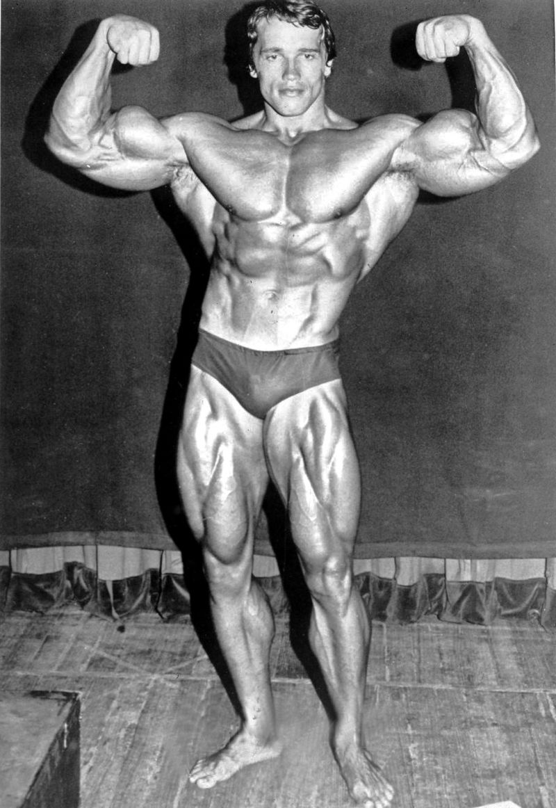

From Wikipedia, the free encyclopedia
This article is about the indoor sports facility. For the fitness club, see Health club. For the school class known as "gym", see Physical education. For other uses, see Gymnasium (disambiguation).
A gymnasium, also known as a gym, is an indoor location for athletics. The word is derived from the ancient Greek term "gymnasium".[1] They are commonly found in athletic and fitness centers, and as activity and learning spaces in educational institutions. "Gym" is also slang for "fitness centre", which is often an area for indoor recreation. A "gym" may include or describe adjacent open air areas as well. In Western countries, "gyms" (or pl: gymnasia") often describe places with indoor or outdoor courts for basketball, hockey, tennis, boxing or wrestling, and with equipment and machines used for physical development training, or to do exercises. In many European countries, Gymnasium (and variations of the word) also can describe a secondary school that prepares students for higher education at a university, with or without the presence of athletic courts, fields, or equipment.
Gymnasia apparatus like barbells, jumping boards, running paths, tennis-balls, cricket fields, and fencing areas are used for exercises. In safe weather, outdoor locations are the most conducive to health.[2] Gyms were popular in ancient Greece. Their curricula included self-defense, gymnastics medica, or physical therapy to help the sick and injured, and for physical fitness and sports, from boxing to dancing to skipping rope.[3] Gymnasia also had teachers of wisdom and philosophy. Community gymnastic events were done as part of the celebrations during various village festivals. In ancient Greece there was a phrase of contempt, "He can neither swim nor write." After a while, however, Olympic athletes began training in buildings specifically designed for them.[4] Community sports never became as popular among ancient Romans as it had among the ancient Greeks. Gyms were used more as a preparation for military service or spectator sports. During the Roman Empire, the gymnastic art was forgotten. In the Dark Ages there were sword fighting tournaments and of chivalry; and after gunpowder was invented sword fighting began to be replaced by the sport of fencing, as well as schools of dagger fighting and wrestling and boxing.[5] In the 18th century, Salzmann, a German clergyman, opened a gym in Thuringia teaching bodily exercises, including running and swimming. Clias and Volker established gyms in London, and in 1825, Doctor Charles Beck, a German immigrant, established the first gymnasium in the United States. It was found that gym pupils lose interest in doing the same exercises, partly because of age. Variety in exercises included skating, dancing, and swimming. Some gym activities can be done by 6 to 8-year-olds, while age 16 has been considered mature enough for boxing and horseback riding.[6]
The first recorded gymnasiums date back to over 3000 years ago in ancient Persia, where they were known as zurkhaneh, areas that encouraged physical fitness. The larger Roman Baths often had attached fitness facilities, the baths themselves sometimes being decorated with mosaics of local champions of sport. Gyms in Germany were an outgrowth of the Turnplatz,[8] an outdoor space for gymnastics founded by German educator Friedrich Jahn in 1811[9] and later promoted by the Turners, a nineteenth-century political and gymnastic movement. The first American to open a public gym in the United States using Jahn's model was John Neal of Portland, Maine in 1827.[10] The first indoor gymnasium in Germany was probably the one built in Hesse in 1852 by Adolph Spiess.[11]